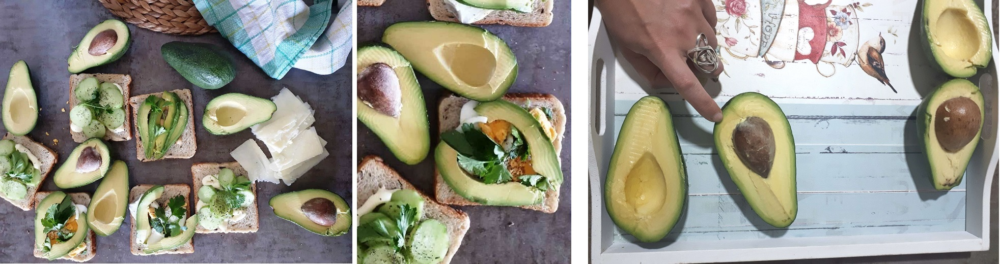

Well, avocado lovers I must admit that avocado is one of my favs.
I even have avocado tree on my balcony. Probably will never eat avocado from him, but still..
is very beautiful. I read that avocado trees do not self-pollinate; they need another avocado tree close
by in order to grow. Avocados are an Aztec symbol of love and fertility, and they also grow in pairs on
trees. So I should plant and growth another one if I want fresh avocado :)))
Avocados are with a creamy texture and they grow in warm climates. Their potential health benefits
include improving digestion, decreasing risk of depression, and protection against cancer.
Avocados are a naturally nutrient-dense food and contain nearly 20 vitamins and minerals.
Avocados are a great source of vitamins C, E, K, and B-6, as well as riboflavin, niacin, folate,
pantothenic
acid, magnesium, and potassium. They also provide lutein, beta-carotene, and omega-3 fatty acids.
Fat is essential for every single cell in the body. Eating healthy fats supports skin health, enhances
the
absorption of fat-soluble vitamins, minerals, and other nutrients, and may even help boost the immune
system.
And do you know what is avocado? Fruit or vegetable? Me I really didn't know :)
Let's play and give yourself a try.
What is avocado? Is an avocado a fruit or vegetable?
Perhaps its most recognizable dish is guacamole, the popular Mexican dip made for tacos, burritos, and
more. But avocados have a home in thousands of other recipes.
You can use avocados on different ways - addition to sandwiches and salads, dips, with sea
food, with pasta, to add in ice cream, make chocolate avocado mousse and more and more.
Avocado can be used in a number of different forms, many of which are available to purchase online,
including avocado oil. Avocado oil may be used for cooking, or for moisturizing the skin or hair, so
check the product information before purchasing.
Avocado is a popular ingredient in moisturizing products, such as face masks and other cosmetics.
Most - I want to eat avocado :) Avocado recipes are popular because they're quick and healthy.
Best way to prepare avocado is to store them at room temperature, keeping in mind that they can take 4
to 5 days to ripen.
When the outside skins are black or dark purple, they’re ready and best to eat.
My avocado toast is ready for 5 to 10 minutes. And you will have fast breakfast or dinner. Or simply
trendy meal. Tasty and easy to make.

RECIPE
Avocado toast
2-3 ripe avocado, peeled and cut into large slices
2 teaspoons freshly squeezed lemon juice
2 boiled eggs
1 cucumber
2-3 parsley leaves, freshly torn
extra virgin olive oil, for drizzling
slices of bread, toasted
1/4 teaspoon salt
freshly ground black pepper
Directions
In a small bowl, combine the avocado, lemon juice and parsley leaves.
Using a fork, lightly mash one or two pieces of avocado and mix with the remaining chunks. You want the
avocado to be very, very chunky – and preferably have a few whole slices intact! Season to taste with
salt and pepper, and set aside.
On a toast you can put some herb cheese spread. Then, avocado mash onto the toast, drizzle lightly with
olive oil,
add boiled egg (split with a knife right before serving), and garnish generously
with parsley leaves and slices of cucumber.
Serve immediately.
Make this for your friends. It’s magical like that.
Enjoy avocados as much as I do? Hope you do!
And remember - avocados are literally one of the healthiest foods you can put in your body.
Avocado is a super food.
The health benefits of avocado are endless.
All the best good people, till next time!